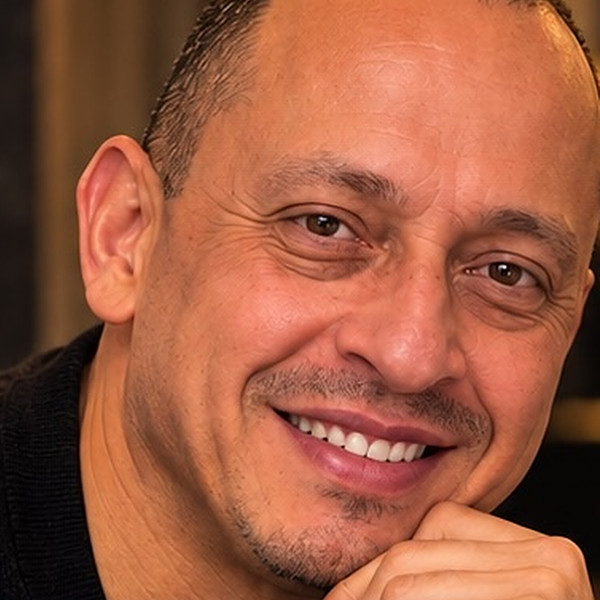
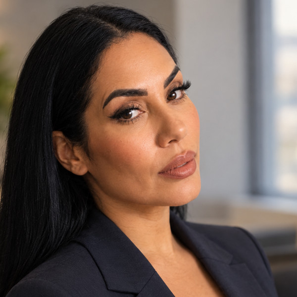
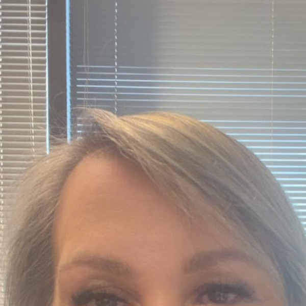
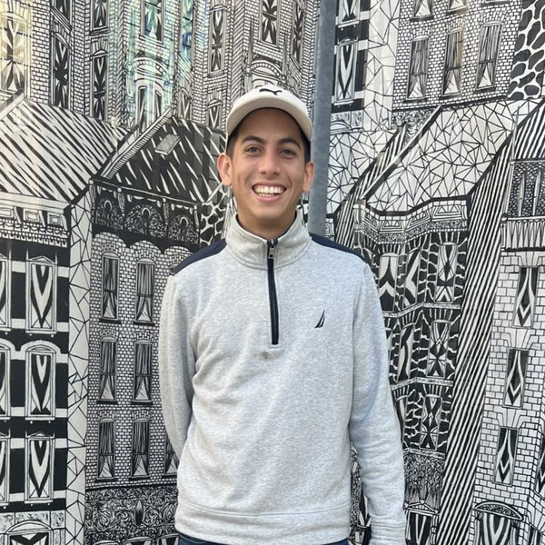

Board of Directors as of October 2026.

Cesar Castillo Garnica
Founder, President & Executive Director
Cesar Castillo Garnica is a bilingual (Spanish/English) Medical Case Manager at Commonwealth Land Trust in Boston, where he has worked since 2023 on medical coordination, housing applications such as RAFT and Boston Housing Authority, and detox and mental-health referrals. From 2018 to 2023 he was a Peer Advocate and Health System Navigator at the Multicultural AIDS Coalition. He is HIPAA-certified, trained in case-management documentation (Mass. DPH) and JRI Health trainings, and he founded Status Project in 2023.

Elizabeth Valentin
Vice President, Vice Chair & Co-Founder
Elizabeth Valentin is Lead Case Manager at the Multicultural AIDS Coalition, where she has also served as Health System Navigator and coordinated HIV/HCV/STI testing. Earlier, she was an Outreach Worker and Health System Navigator at HOPE (Hispanic Office of Planning and Evaluation) in Jamaica Plain from 2010 to 2012, leading an HIV/AIDS peer support group. She worked with Cesar Castillo Garnica for about three years to develop Status Project.

Elizabeth Castro
Treasurer & Co-Founder
Elizabeth Castro handles accounts payable at Humanitary Medical Center Inc., using Oracle NetSuite and Bill.com. Since 2022 she first worked there as a social worker helping seniors with benefits and housing applications, and she previously served as Assistant Director and Case Manager of the Parent Aide Program at Centro Las Americas in Worcester from 1999 to 2013 and coordinated a health-care-law outreach campaign. She holds a Bachelor's in Business Administration from the Catholic University of Puerto Rico.

Cristian Sleither Castillo Garnica
Director of Community Affairs & External Relations, Co-Founder
Cristian Sleither Castillo Garnica is a native Spanish speaker with a background in construction and facilities maintenance, including water and sewer infrastructure and hotel maintenance. He leads Status Project's community affairs and external relations.
ES
Edson G. Suarez Silva
Clerk (Corporate Secretary) & Co-Founder
Edson G. Suarez Silva is a bilingual (English/Spanish) events specialist with workplace experience and more than seven years in hospitality and logistics. Since 2017 he has been Lead Front-of-House Associate at Gourmet Catering in Natick, and earlier he was a storage and merchandise supervisor in Venezuela. He holds an Associate degree in Foreign Trade from Caracas.
PS
Pepe Siqueiros
Director of Institutional Development & Co-Founder